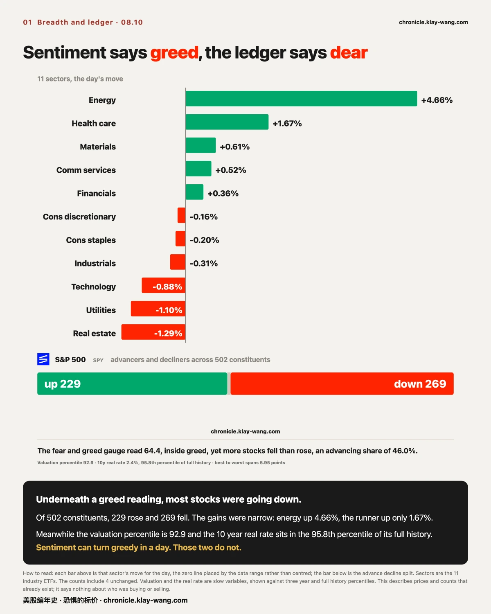
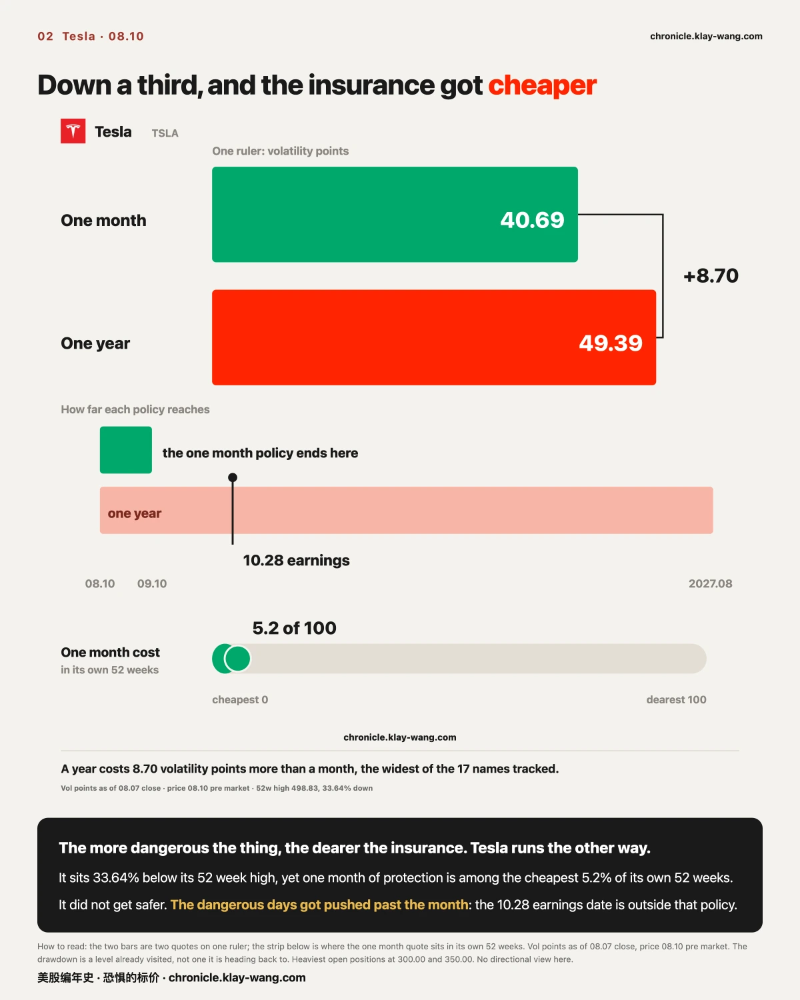
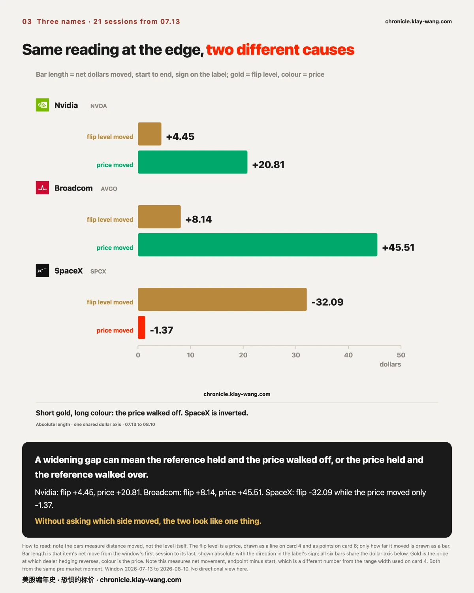
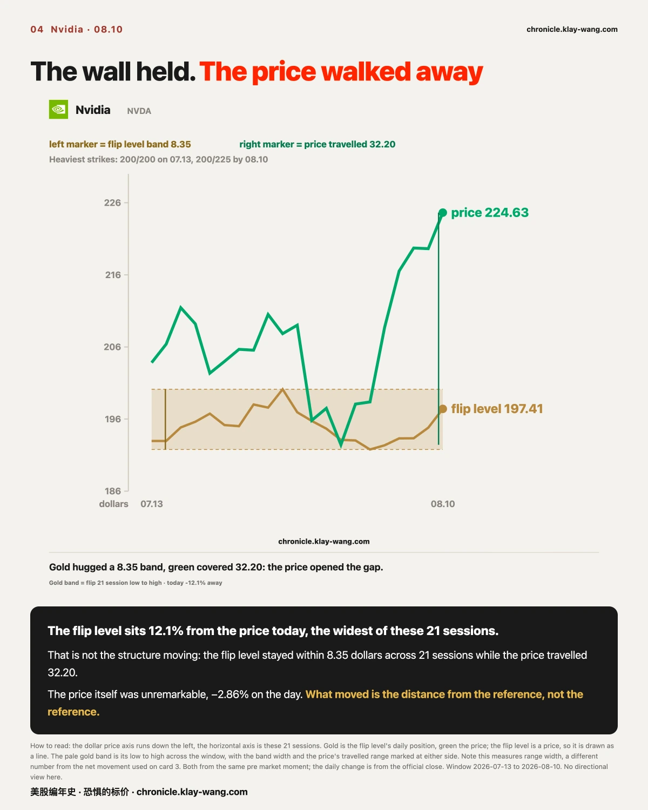
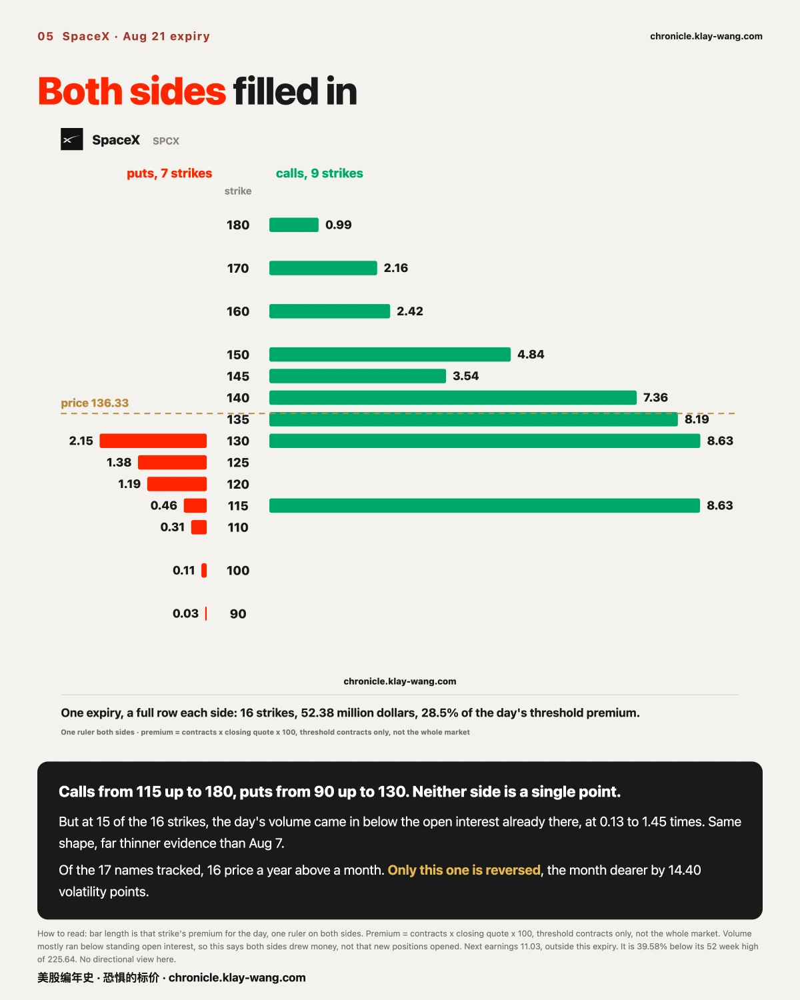
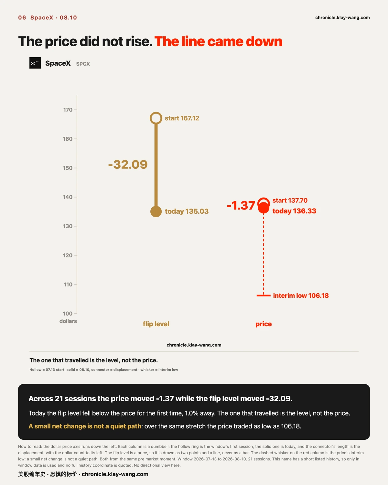
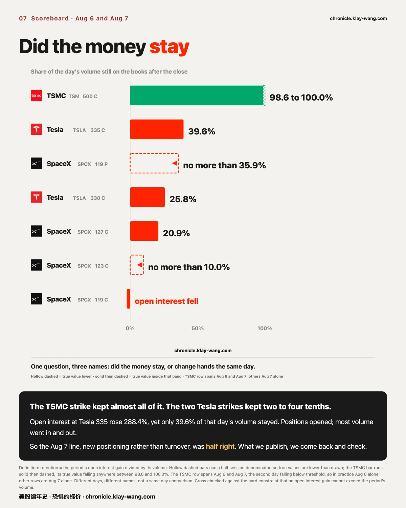
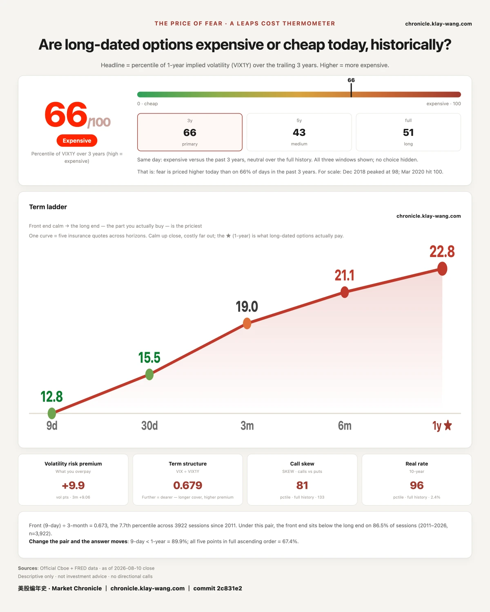

Eight sections, from the whole market down to a single name, then back to check our own record:
Section 1, who rose and who fell inside the market. Eleven sectors' moves, the advance decline split across 502 constituents, and two slow moving numbers: valuation and the real rate. No individual name here.
Section 2, Tesla: the price of protection. It is down a third, and where that one month price sits in its own 52 weeks.
Section 3, how to read one number. The next three sections all use the same indicator. This section explains that when it reaches an extreme, the cause can be the exact opposite. If options are unfamiliar, start here.
Section 4, Nvidia: where the hedging structure sits. A level almost unmoved for 21 sessions while the price walked off.
Section 5, SpaceX: what was paid on the day. Sixteen strikes on one expiry, and how much sat on each.
Section 6, SpaceX: how far that level itself travelled. The other face of the same name from section 5.
Section 7, what we said last time, checked today. A question we published has an answer, and half of what we said was wrong.
Section 8, the price of protection. The close puts today back on a one year scale: whether a year of cover is dear, and why near and far differ.
How to read it: for whether the market is dear today, sections 1 and 8 are enough. For your own name, jump straight to its section. If options are unfamiliar, read section 3 first. Every section opens with a jargon free conclusion; coordinates and definitions follow, so you can stop at any layer and still take away one complete thing.

On the same day, the fear and greed reading sat in greed, and more stocks fell than rose.
The Aug 10 fear and greed reading was 64.4, inside the greed band. Of 502 constituents that day, 229 rose, 269 fell and 4 were unchanged, an advancing share of 46.0%. Underneath a greed reading, most stocks were going down.
The gains were narrow. Across 11 sectors, energy rose 4.66%, alone at the top, with health care second at 1.67%. Below the line, real estate fell 1.29%, utilities 1.10% and technology 0.88%. Best to worst spans 5.95 percentage points.
Two slow variables sit high at the same time. The valuation percentile is 92.9, near the top of the past three years, and the 10 year real rate is in the 95.8th percentile of its full history at 2.4%. The real rate is the denominator under every long duration valuation, and at that level the opportunity cost of long money has not eased.
Sentiment can turn greedy in a day. Those two ledger entries do not move that fast. This section describes prices and counts that already exist; it says nothing about who was buying or selling, and the trade record cannot answer that.

The more dangerous the thing, the dearer the insurance. That is common sense. Tesla is running the other way.
Start with what the instrument is. An option is a conditional policy, and the condition is written as a price. Buying a call that pays only above 350 means paying for the claim that the stock clears 350. If it does not, the paper expires worthless. Higher conditions are harder to reach, so they cost less. The market quotes dozens of those conditions at once, and that row of numbers is its price for how much the thing is expected to move.
Tesla's 52 week high is 498.83. Pre market on Aug 10 it stood at 331.00, down 33.6% from that high, a level already visited, not one it is heading back to.
The price of insuring it for one month, as of the Aug 7 close, sits among the cheapest 5.2% of its own past 52 weeks. On roughly 95% of the days in the past year, short dated protection on Tesla cost more than it does now.
The price of insuring it for a year is 49.39, a full 8.70 volatility points above the one month figure. That gap is the widest of the 17 names tracked here.
It did not get safer. The dangerous days got pushed past the one month window.
Tesla's next earnings date is Oct 28. The one month policy does not reach it; the one year policy does. The name with the widest gap between the two is also the name whose next scheduled event falls just outside the near window. That reading can be refuted: if the gap narrows sharply once Oct 28 has passed, the gap was pricing that event; if it holds after earnings, it was not, and this read has to change.
The heaviest open positions sit at 300 below and 350 above, with the price between them. The market's quoted one month range is plus or minus 12.15, about 3.70%.

A widening gap can mean the reference held and the price walked off, or the price held and the reference walked over.
First, what the reference is. There is a price in the options market above and below which dealer hedging runs in opposite directions: above it, hedging dampens moves; below it, hedging amplifies them. Nobody sets that price. It falls out of the market's open positions and it shifts every day. How far it sits from the current price decides how much room the mechanism has.
Across the 21 sessions from Jul 13 to Aug 10, three names each pushed that distance to their own extreme. The causes were nothing alike.
Nvidia's level went from 192.96 to 197.41, moving 4.45 dollars in 21 sessions, while its price went from 203.82 to 224.63, a move of 20.81. Broadcom is starker still: the level moved 8.14, the price 45.51.
SpaceX ran the other way. Its level fell from 167.12 to 135.03, a move of 32.09, while the price went from 137.70 to 136.33, a net change of 1.37 across 21 sessions.
Without asking which side moved, the two look like one thing. In the first two the price walked away from the reference; in the third the reference walked over to the price. Refutation condition: if Nvidia's level now climbs quickly to chase the price, its earlier stillness was lag rather than anchoring, and this read has to change.

The level sits 12.1% from the price today, the widest of these 21 sessions.
That reads like violent structural change. It is the opposite. The level stayed inside a band 8.35 dollars wide for 21 sessions while the price covered a range of 32.20. The gap was opened by the price, not pushed open by the structure.
The price itself was unremarkable that day: a 217.55 close, down 2.86%, a true range of 3.29% that ranks in the 50th percentile of its own 20 sessions, dead centre.
The heaviest strikes above and below say the same thing. On Jul 13 they were 200 and 200, both crowded onto one number. Today they are 200 and 225: the upper one gave way by 25 dollars as the price rose, the lower one did not move at all.
Refutation condition: if the level jumps above 210 over the next few sessions it was merely slow; if it stays pinned between 190 and 200 it is anchored by the position structure.

Nine call conditions, seven put conditions, one day, one expiry.
SpaceX's Aug 21 expiry had 16 strikes clear threshold on the same day. On the call side, nine consecutive conditions from 115 up to 180. On the put side, seven consecutive conditions from 90 up to 130. Neither side is a single point; each is a full row.
At contracts times the day's closing quote times 100, those 16 strikes total 52.38 million dollars, or 28% of all premium clearing threshold that day. That total covers only contracts above threshold, not the whole market.
The strength has to be stated plainly: at 15 of the 16 strikes, the day's volume came in below the open interest already sitting there, at ratios between 0.13 and 0.94, the 170 condition being the exception. The three strikes on Aug 7 ran at 2.37 to 2.77, volume two to three times the standing stock. Same shape, far thinner evidence, so this says only that both sides drew money, not that new positions were opened.
The term shape is worth recording. Of the 17 names tracked, 15 price a year of protection above a month of it. SpaceX is the only one reversed: 85.34 for one month against 70.94 for one year, the near date dearer by 14.40 volatility points.
Every other name puts the expensive stretch a year out. This one puts it inside the month. Its next earnings date is Nov 3, outside that window, so earnings are not holding the shape up. The refutation condition: if the one month figure drops back below the one year figure after the Aug 21 batch expires, the premium was about something in these few weeks; if it stays higher, it is this name's normal state and we have been reading it as an anomaly.
It is 39.58% below its 52 week high of 225.64.

Across 21 sessions the price moved 1.37 dollars. The level moved 32.09.
On Jul 13 the level stood at 167.12, some 21.4% above the price of that day. Today it is 135.03, below the price for the first time. On every one of the preceding sessions it sat above.
But a small net change is not a quiet path. Over the same stretch the price traded as low as 106.18 before recovering. A net change is the endpoint minus the start; it records nothing about the road. Both numbers together are the complete picture: a long way travelled, ending almost where it began.
It rose 4.23% on the day, the largest gain of the 17 names tracked, on a true range of 6.81% that ranks in the 55th percentile of its own 20 sessions, entirely ordinary.
Refutation condition: if the level keeps falling and the gap widens, it is tracking a lower centre of open positions; if it springs back above the price, today's crossing was a one day affair.

What we publish, we come back and check. This time we were half right.
The Aug 7 issue described a batch of trades in Taiwan Semiconductor's Dec 18 expiry and left an open question: did that money stay on the books, or did it change hands the same day. It could not be computed then, and we said we would wait. It can be computed now.
Two different things. Volume counts how many times paper traded in a day, ten round trips on the same contract counting ten times. Open interest counts what is still on the books after the close, one contract held counting once. The first is activity, the second is what remained. Divide the second by the first and you know how much of the day's activity became real positions.
The Taiwan Semiconductor strike, the 500 condition: 19977 contracts traded on Aug 6, and over the following two sessions open interest rose by 20195. Almost all of it stayed.
The same ruler on Tesla. On Aug 7 its 330 and 335 conditions traded 16077 and 21464 contracts, and open interest then rose 133% and 288%. Doubling to nearly tripling is not something turnover produces, so positions were genuinely opened. But only 25.8% and 39.6% of that day's volume remained.
SpaceX's four strikes are thinner still: the 127 condition retained 20.9%, the other three no more than 10.0% and no more than 35.9% respectively, while open interest at the 119 call actually fell.
So the Aug 7 sentence, that this was new positioning outside existing open interest rather than turnover within it, was half right. Positions were opened, and the open interest gains are hard numbers. But most of the volume that crossed that day went in and out the same day. One sentence made two claims; one holds, one does not, and we are splitting them here.
The two rulers have different spans. The Taiwan Semiconductor figure covers Aug 6 and Aug 7 together, the second day's volume having fallen below threshold, so in practice it is Aug 6 alone. The Tesla and SpaceX figures are Aug 7 alone. Different days, different names, not a same day comparison.

My fear thermometer measures one thing: how much the market pays, right now, to insure the next year. The dearer the insurance, the more afraid the market is.
Today it reads 66 out of 100, meaning that insurance is dearer than on 66% of the past three years' days.
Why it touches you: this number is not written for the people buying protection. It is the price quoted by the people selling it.
Two different numbers first. The commonly quoted panic gauge measures the next 30 days and can jump on a single headline. This one measures the next year, where a two point move is a large day. The short end is sentiment; the long end is cost. A market maker has to quote. He does not guess direction, he computes what he must charge to carry the risk without losing. That number is calculated, not felt, and when it genuinely moves, someone's cost model has changed.
At one moment on Aug 10, five maturities formed a single upward slope: 12.77 at 9 days, 15.46 at 30 days, 18.98 at 3 months, 21.14 at 6 months, 22.76 at one year. The ratio of short end to long end is 0.679, which ranks in the 16.0th percentile of the past three years; the lower it goes, the cheaper the near date is relative to the far one.
What moved these past sessions was the long end. The Price of Fear went 61.5, then 63.4, then 66, rising two sessions running, while over the same stretch the short end only drifted from 14.9 back to 15.46.
If your car is in an accident, next year's renewal usually costs more: the insurer has decided the road will keep producing accidents, and only then does it dare charge more. These sessions ran the other way. The road ahead looks quiet, yet the long dated policy is quietly repricing upward. The road did not change; the long dated premium did. The people who sell that protection run the most careful arithmetic in the market, and raising the far date without raising the near one says that on their books, the thing to charge more for is not this month. It is this year.
The shape is not confined to the index. Of the 17 names tracked, 15 price a year above a month, one is reversed, and one was not captured that day. This is not an index quirk. It is the shape of almost every name today.
It does not tell you where tomorrow goes. It tells you what the people who must quote the next year, and who pay for quoting it wrong, are charging today.
Fear-Price Index by Market Chronicle · Aug 10, 2026 · 66/100: one year volatility VIX1Y at 22.76, in the 66th percentile of the past three years, high means dear. Daily ledger and definitions → chronicle.klay-wang.com · Attribution: Fear-Price Index · Market Chronicle
Three things to check next issue: whether Tesla's 8.70 point term gap narrows, how much open interest survives the SpaceX Aug 21 batch, and whether the long end keeps climbing. Tesla's walls and term structure update daily in the options structure section at chronicle.klay-wang.com/options.